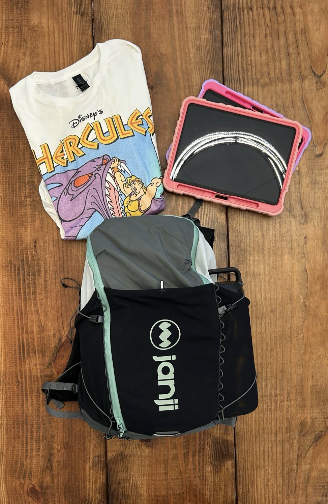
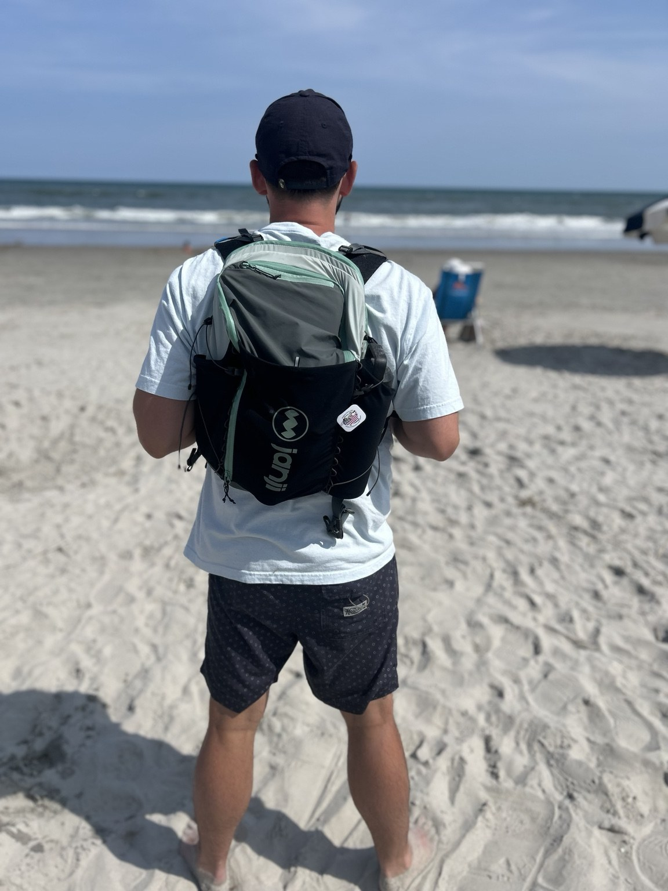
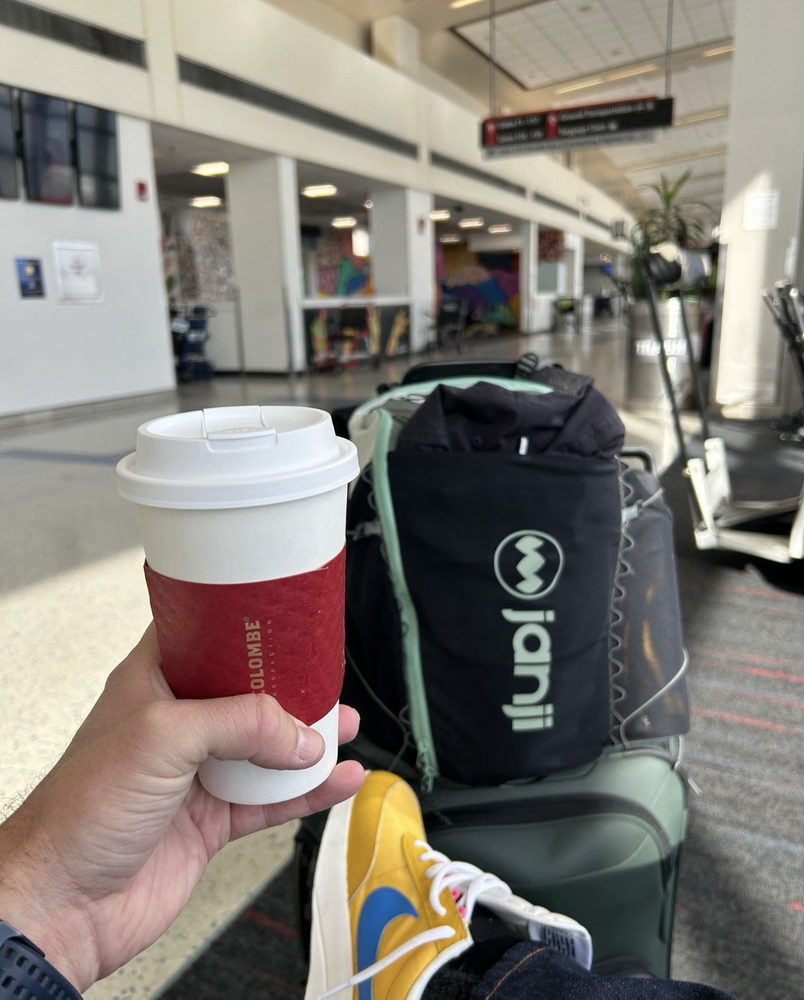
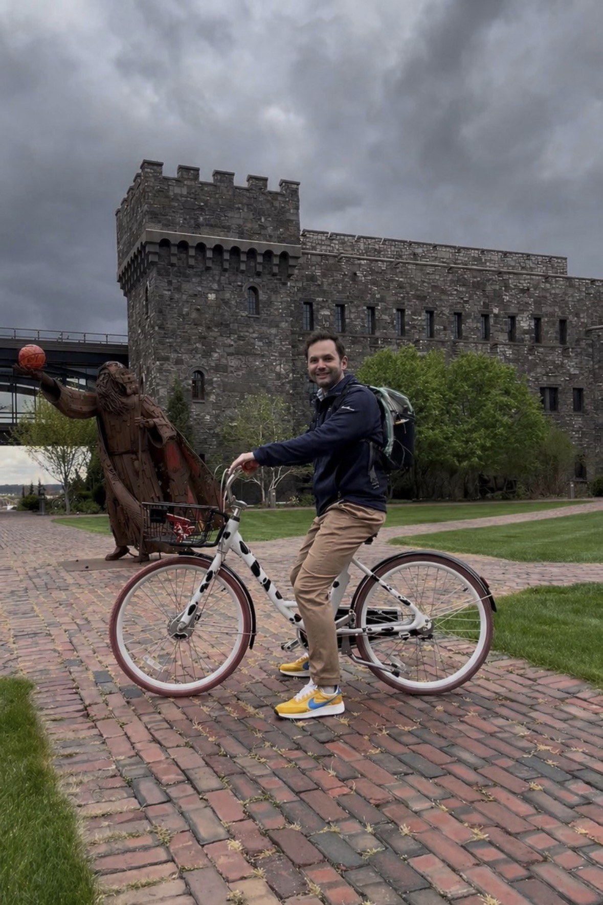

Janji Revy Pack
One pack built for trails, travel, work, family adventures, and everything in between.
Back to GearWhen most people think about the Janji Revy Pack, they'll probably assume it's built specifically for multi-day adventures in the mountains. And while it absolutely excels there, I think Janji accidentally created one of the best all-around backpacks I've ever used.
I've been using the Revy Pack for over a year, and during that time it's gone almost everywhere with me—from technical trails and long runs to Disney World, work conferences, family vacations, beach trips, airports, and my daily commute. It has quietly become the backpack I instinctively grab before walking out the door.
So, is the Revy Pack worth the $198 price tag? Let's dive into The Good, The Bad, and The Verdict.

The Good
Janji likely designed the Revy Pack for multi-day hiking and fastpacking adventures, and it absolutely shines there. But what impressed me most is just how versatile it is.
I've taken this pack on trails, to Disney, work conferences, the beach, family vacations, and even used it as my everyday work bag. The large main compartment easily holds food, extra layers, or rain jackets, while the rear compartment keeps my laptop and important documents protected. Add the two side pockets for water bottles, and there's a place for everything.
Comfort is another standout feature. I've worn it for hours in the heat without any chafing or discomfort, even when the pack was fully loaded.

And yes...it's actually fun to run in. The included soft flask fits securely in the vest-style harness, making it easy to transition from hiking to running whenever the adventure calls for it.

The Bad
While this pack is very close to being a unicorn, I did run into one small issue. If you've completely filled the main compartment, accessing the rear laptop compartment becomes a little difficult. The rear compartment is fairly narrow, making it ideal for laptops, tablets, notebooks, and other flatter items, but not bulkier gear.
It's a minor complaint, but something worth considering depending on how you pack the bag.
Verdict
The Janji Revy Pack has become one of my favorite pieces of gear this year.
Whether you're planning a multi-day hiking adventure, traveling with the family, commuting to work, or simply looking for one backpack that can do it all, this pack delivers.
At $198, it isn't cheap, but considering the comfort, organization, versatility, and the fact that it doubles as both a premium backpack and a capable running vest, I think it's well worth the investment.
If you're looking for one backpack that can truly do it all, the Janji Revy Pack deserves to be at the top of your list.

Buy If
- You want one pack for travel, work, trails, and family adventures.
- You need a laptop-friendly bag that can still handle outdoor use.
- You want vest-style comfort and hydration options.
Skip If
- You need a large rear compartment for bulky items.
- You want a simple budget backpack.
- You rarely need hydration or trail-ready features.